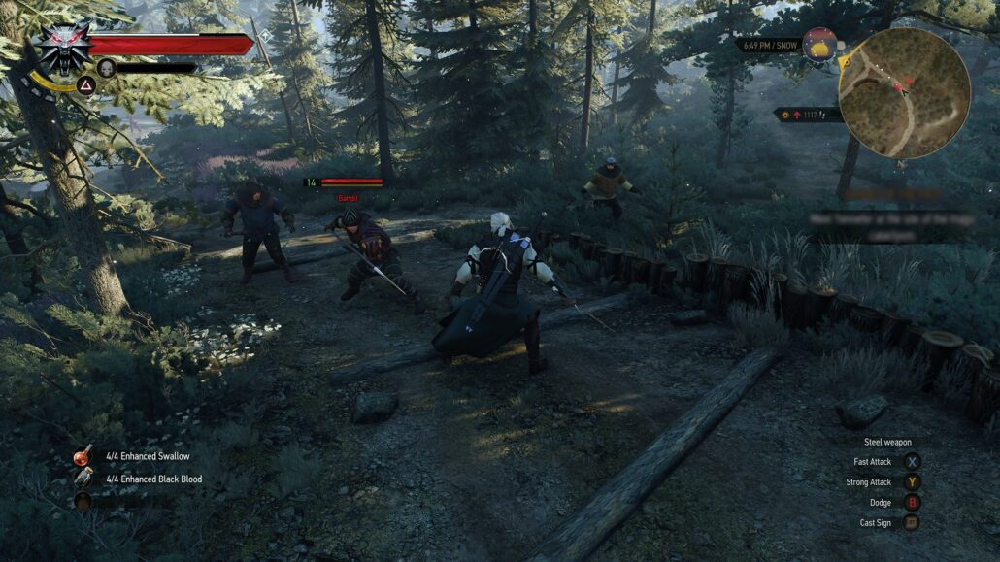

The Witcher 3: Wild Hunt é uma obra singular que se destaca de maneira única no cenário dos games. Um dos seus grandes méritos reside na ambientação inspirada no folclore eslavo, o que concede ao universo uma identidade própria e uma trilha sonora memorável, profundamente marcante e imersiva.
narrativa é extraordinária, impulsionada por diálogos maduros e por um sistema de tomadas de decisão onde as escolhas do jogador de fato moldam o rumo da história. Somado a isso, o sistema de combate e a jogabilidade entregam uma experiência fluida e extremamente prazerosa ao longo de toda a jornada.
Embora seja um título lançado anos antes de Zelda: Tears of the Kingdom — jogo que experimentei primeiro —, The Witcher 3 é tão espetacular que conseguiu me transmitir uma sensação de fascínio e imersão muito próxima à que tive no mundo de Hyrule, algo que eu julgava ser quase impossível em outro game.
Outro ponto impressionante é a imensa quantidade de conteúdo disponível: cada missão secundária possui alto nível de elaboração e relevância, evitando a repetição comum ao gênero. Por reunirse em uma combinação tão completa de enredo, arte e mecânicas, o título se consolida, sem dúvidas, como um dos melhores jogos da década e justifica plenamente toda a aclamação crítica que recebe até hoje.Justificando toda a atenção que a empresa proprietária tem com o título até os dias atuais, que mesmo após 10 anos de lançado, ainda receberá atualizações gráficas e conteúdo adicional
Um dos pilares mais impressionantes de The Witcher 3 é o impacto real das escolhas do jogador ao longo da narrativa. Diferente de muitos jogos onde as opções de diálogo são superficiais, aqui as decisões influenciam diretamente o rumo das missões, o destino de reinos e a vida dos personagens.The Witcher 3 foi um dos primeiros jogos a popularizar o sistema de escolhas nos games.
Mesmo tendo sido lançado em 2015, The Witcher 3: Wild Hunt impressiona pela riqueza de detalhes visuais e por uma direção de arte impecável. O mundo do jogo é vivo e dinâmico, apresentando vegetações que reagem organicamente ao vento, sistemas climáticos impressionantes e um ciclo de dia e noite que transforma completamente a iluminação das paisagens.
O design dos cenários reflete com maestria o tom sombrio da obra: desde o clima mântico e pântanos opressivos de Velen até a arquitetura medieval detalhada de Novigrad e as montanhas geladas de Skellige. A modelagem dos monstros e o cuidado com as armaduras do bruxo fecham o pacote visual, entregando uma das ambientações mais ricas e bem construídas da história dos videogames.

A trilha sonora do jogo é um espetáculo à parte e um dos elementos que mais conferem personalidade ao título. Compostos com forte inspiração no folclore e na música tradicional eslava, os arranjos utilizam instrumentos rústicos e vocais étnicos marcantes para criar uma atmosfera única.
A música se adapta dinamicamente aos momentos de navegação pelo mundo aberto e ganha um tom visceral e épico durante os combates. Essa combinação sonora eleva a imersão do jogador, tornando as paisagens de Velen, Novigrad e Skellige instantaneamente reconhecíveis e inesquecíveis.
Nota no Metacritic: 92 / 100 (Universal Acclaim) — Com essa média expressiva concedida pela crítica especializada, The Witcher 3: Wild Hunt se estabeleceu como um dos RPGs mais aclamados da história dos games. Os analistas destacaram principalmente o nível de escrita impecável das missões secundárias, a maturidade do enredo e as consequências reais de cada escolha do jogador.